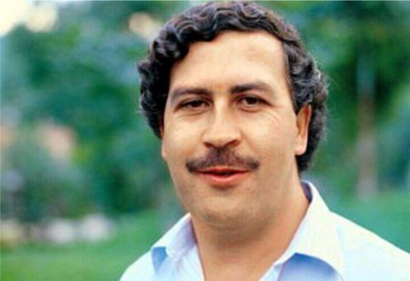
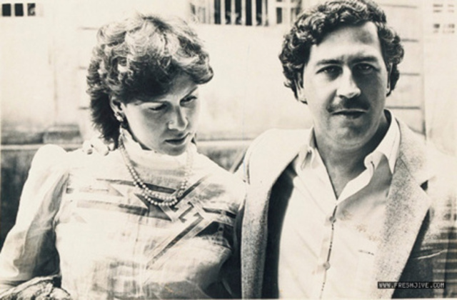

Pablo Escobar
PABLO ESCOBAR
“Everyone has a price, the important thing is to find out what it is.”

Pablo Emilio Escobar Gaviria (/ˈɛskəbɑːr/; 1 December 1949 – 2 December 1993) was a Colombian drug lord and narcoterrorist who was the founder and sole leader of the Medellín Cartel. Dubbed "The King of Cocaine," Escobar is the wealthiest criminal in history, having amassed an estimated net worth of US$30 billion by the time of his death—equivalent to $59 billion as of 2019—while his drug cartel monopolized the cocaine trade into the United States in the 1980s and 1990s.
Here's a time line of Pablo Escobar's life:
- Dec 1, 1949 - Pablo Escobar was born in December of 1949. He grew up in a lower-class family, so his life of crime began at an early age. It has been said that Escobar had stolen gravestones with his brother in his teenage years, selling them to smugglers from Panama.
- Dec 1, 1969 - By age twenty, Pablo Escobar became more familiar with the drug and cocaine underworld. He was an apprentice to multi-millionaire Alvaro Prieto, who was a drug smuggler. By age 22, he was a millionaire himself.
- Jan 1, 1975 - Pablo Escobar began his own cocaine operation in the year of 1975, and he smuggled loads of cocaine into America via airplane. He had ambition and a sense of emotional power that would later allow him to become one of the most influential men in the world.
- Jan 1, 1975 Murder -Under the orders of Pablo Escobar himself, former Mendellín group leader Fabio Restrepo was murdered. Because he was murdered, Palo Escobar took over the Mendellín group. He would lead the group to infamous heights, and the Mendellín group eventually controlled over 80% of the cocaine in the western hemisphere.
- Mar 1, 1976 - Escobar married Maria Victoria at age 26, at the time when she was 15 years old. They had two children who Pablo Escobar hoped would carry on the drug trade.

- Aug 1, 1983 Congress -In August of 1983, Pablo Escobar was elected to Congress. He had murdered Colombian Minister of Justice, Rodrigo Lara Bonilla a year later due to the fact that Bonilla prosecuted cocaine traffickers of the Mendellin Cartel. After the Colombian government discovered this fact, they took away Escobar's US visa and expelled him from Congress.
- Jan 1, 1985 Power -In the mid 1980's, Pablo Escobar was one of the most powerful, influential, and rich men in the world. He was listed as the seventh-richest man in the world by Forbe's magazine. Because he had an army of criminals and soldiers in his posession, he could order the murder of anyone at any time. Not only that, but he had a private mansions, houses, a zoo, airstrips, and planes all over Columbia. Escobar had a personal wealth of about 24 billion dollars.
- Jun 19, 1991 La Catedral - On June 19th, Pablo Escobar was under serious pressure to be extradited. So, he and his lawyers came up with an idea to build a prision specifically for Pablo Escobar. Escobar turned himself in for a five year jail term in exchange for not being moved to the United States. The prision, called "La Catedral", was luxurious and large (and even had a jacuzzi!) The prision even had it's own guards hired by Pablo Escobar. He continued his drug business by giving orders through telephone in the prision
- Dec 2, 1993 The End - A day after his birthday in 1993, Pablo Escobar had been found by a Columbian electronic surveillance team. Escobar had attempted to escape by jumping over roofs of houses, but he and his bodyguard were soon caught by Colombian officials. Members of the search team celebrated over his desceased body. The operations of finding him counds hundreds of millions of dollars over the course of fifteen months.
If you want to read more about Pablo Escobar
Wikipedia.